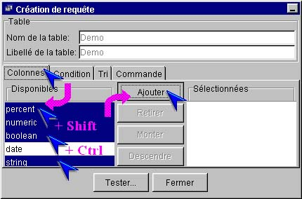
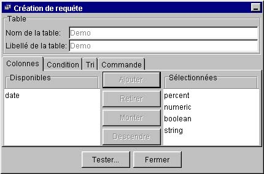
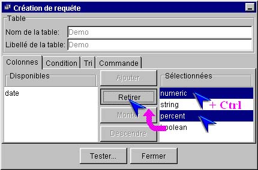
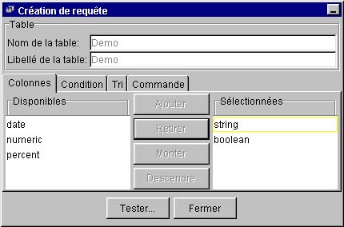
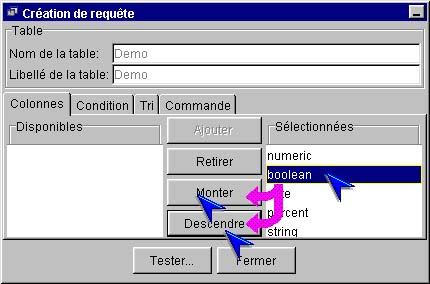

I-SIS Explorer

Guide d'utilisation
|
|
I-SIS Explorer |
|
|
Guide d'utilisation |
||
Pour éditer une requête, il faut choisir les colonnes à afficher et leur ordre. Dans le volet "Colonnes" de l'éditeur, les colonnes sélectionnées sont transférées du cadre "Disponibles" vers le cadre "Sélectionnées", où elles peuvent alors être ordonnées.
Cliquez le volet "Colonnes", si nécessaire, pour l'afficher au premier plan,
Dans le cadre "Disponibles", sélectionnez les colonnes que vous souhaitez afficher. Les touches [Shift] et [Ctrl] restent fonctionnelles (cf. «Rappels»),

Cliquez le bouton "Ajouter", activé dès la sélection de colonnes disponibles,
Les colonnes sélectionnées sont ainsi ajoutées dans le cadre "Sélectionnées". Pour en ajouter d'autres, il suffit de reprendre la procédure.

Dans le cadre "Sélectionnées" du volet "Colonnes", sélectionnez les colonnes que vous ne souhaitez plus afficher. Les touches [Shift] et [Ctrl] restent utilisables dans le I-SIS Explorer (cf. «Rappels»),

Cliquez le bouton "Retirer", activé dès sélection d'une colonne dans le cadre "Sélectionnées",
Les colonnes sont re-transférées dans le cadre "Disponibles". Pour retirer d'autres colonnes, il suffit de reprendre cette procédure.

Pour ordonner les colonnes sélectionnées, on peut monter ou descendre une colonne à la fois. L'ordre des colonnes sélectionnées détermine celui de leur affichage, lorsque la requête est exécutée.
Dans le cadre "Sélectionnées" du volet "Colonnes", cliquez une seule colonne,
Cliquez le bouton "Monter" ou "Descendre", chacun n'étant activé que si l'opération est possible.

Copyright © 2003 BV Associates. Tous droits réservés.